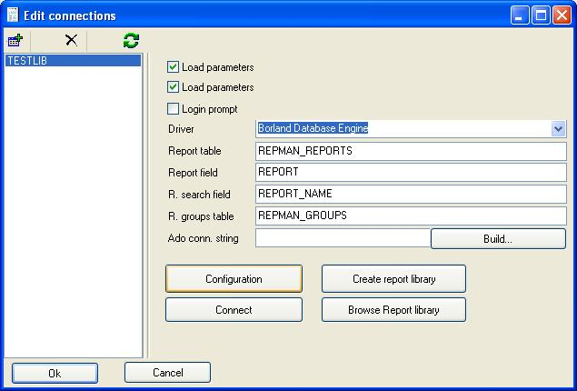

Report Manager supports report libraries, you can store reports inside database tables, so they are centraliced in a single place.
You can configure available libraries at Report Manager designer, go to File Menu, Libraries and configuration:

It's recommended you create the library from this dialog, after testing the database connection, a library consists in two tables, the reports table and the groups table. In the report table the reports and report descriptions are stored, the groups table is needed to store the tree structure of the library. You can browse the library after the creation.
You can create new folders and new reports.
Use the save to library and open from library options and file menu to manage the reports inside the library.
Delphi/Bulider/Kylix components support also report libraries from the IDE, you can even test your reports without compiling your application. Use a TRpAlias to setup database connections and check report library access, then link your PDF/CLX/VCLReport to the TRpAlias, select a connection name and a report name.
Report Library with PosgreSQL
You can create report libraries with PosgreSQL, but you need to create a domain BLOB in your database to identify the binary datatype:
CREATE DOMAIN BLOB AS bytea
Creating the library yourself
Report Manager executes a SQL standard sentences to create report libraries, if you experience problems you can create the libraries manually.
For example using postgresql:
CREATE TABLE public.repman_reports (
report_name varchar(50) NOT NULL,
report bytea, //not use domain blob
report_group int4,
user_flag int4,
CONSTRAINT repman_reports_pkey PRIMARY KEY (report_name)
) WITH OIDS;